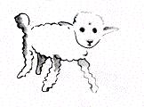
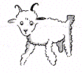
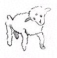

Chaith mé mo shaol i m'aonar marsin, gan duine ar bith agam le
mo chaint a dhéanamh leis dáiríre, go dtí an la a tháinig mé anuas
i ngaineamhlachan tSahára. Rud éigin a bhris in inneall m'eitleáin.
Agus ó tharla nach raibh meicneoir liom, ná paisinéirí, thug mé
faoin rud a chóiriú ar mo chonlán féin, cé go raibh sé deacair.
Ceist beatha nó báis a bhí ann dom. Is ar éigean a bhí a oiread
uisce agam agus a choinneodh ag ól mé go ceann ocht lá.
An chéad oíche mar sin chuaigh méa chodladh ar an ghaineamh
mile míle ar shiúl ó chónaí daonna. Bhí mé chomh scartha amach
le duine ar briseadh a long agus é ar rafta i lár na farraige móire.
Samhlaigí daoibh féin marsin an t-ionadh a bhí orm, ag breacadh
an lae, nuair a mhúscail glór beag aisteach mé. Séard a dúirtsé...
- Le do thoil, déan pictiúr de chaora dom!
- Cad é?
- Déan pictiúr de chaora dom...
Léim mé i mo sheasamh mar a bhuailfí le splanc tintrí mé.
Chuimil mé mo shúile go maith. Bhreathnaigh mé go maith. Agus
chonaic mé firín beag saoithiúil amach agus amach agus é ag
amharc orm go stuama. Seo thall an phortráid is fearr dár éirigh
liom a dhéanamh de, níos moille. Ach ar ndóigh níl mo phictiúr
baol ar bheith chomh halainn leis féin. Ní ormsa atá an locht.
Chuir na daoine móra beaguchtach orm maidir le bheith i mo
phéintéir, nuair a bhí mé sé bliana d'aois, agus níorfhoghlaim mé
le haon rud a líniú, seachas boanna dúnta agus boanna oscailte.
Mar sin, d'amharc mé ar an bhfís seo romham agus mo dhá
shúil ar bior le hiontas. Ná déanaigí dearmad go raibh mé míle
míle ar shiúl ó aon chónaí daoine. Ina dhiaidh sin, níor amharc
an firín seo agam mar a bheadh sé ar seachrán, ná marbh
tuirseach, ná stiúgtha leis an ocras, ná spalptha le tart, ná eagla a
chraicinn bheith air. Ní raibh cuma dá laghad air gur páiste é a
bhí caillte sa bhfásach, míle mile ó aon chónaí daoine. Nuair a
tháinig an chaint chugam ar deireadh, arsa mise leis:
- Ach...cad atá ar siúl agat anseo?
Agus ar seisean liom arís, go bog íseal, mar a bheadh sé an-
dáirire faoin rud:
- Le do thoil, déan pictiúr de chaora dom...
Nuair a bhíonn cúrsaí chomh diamhrach sin, ní bheadh sé de
dhánaíocht ionat gan rud a dhéanamh air. Cuma cé chomh
hamaideach agus a bhí se, dar liom míle míle ar shiúl ó aon
chónaí daoine agus mé i mbaol báis, tharraing mé amach as mo
phóca duille pháipéir agus peann casa.


Ach ansin chuimhnigh mé gurb
iad na rudaí is mó a bhí foghlamtha
agam tíreolas, stair, uimhríocht agus
gramadach agus dúirt mé leis an
bhfirín beag (agus beagán
drochspionn orm) nach raibh mé in
ann líníocht a dhéanamh.
D'fhreagair sé:
- Is cuma sin. Déan pictiúr de
chaora dom.
Ó tharla nach ndearna mé pictiúr

de chaora riamh, tharraing mé arís
ceann den dá phictiúr a bhí ar mo
chumas. An boa dúnta. Agus bhí mo
sháith iontais orm nuair a thug an
firín seo de fhreagra orm:
- Ní hea! Ní hea! Ní eilifint taobh
istigh de bhoa atá de dhíth orm. Bíonn
boa an-dainséarach agus tá an eilifint
an-amscaí. Áit an-bheag atá agam sa
bhaile. Caora atá uaim. Déan pictiúr de chaora dom.
Mar sin, thosaigh mé ag tarraingt.
D'amharc sé go cúramach orm, agus ansin:
- Ní hea! Tá an ceann sin tinn. Déan ceann ceile.
Tharraing mé liom:

Tháinig aoibh an gháire ar mo
chara beag, go caoin cneasta.
-An bhfeiceann tú...ní caora é sin,
is reithe é sin, is reithe é. Tá adharca
air...
Rinne mé mo líníocht arís:
Ach ní ghlacfadh séleis, ach oiread
leis na cinn roimhe.
- Tá an ceann sin róshean. Caora atá uaim a mhairfeas i bhfad.
Ag an phointe sin, agus mé i ndeireadh na foighde, mar bhí
deifir orm chun m'inneall a bhaint dá chéile, bhreac mé síos an
pictiúr seo:
Agus dúirt mé suas leis:
- Sin é an cófra. An chaora atá uait, tá sí istigh ann.
Ach ba mhór an t-iontas a bhí orm nuair a tháinig loinnir sna
súile ag an mheasúnóir beag seo agam:
- Sin é díreach mar a theastaigh uaim. Meas tú an mbeadh
mórán féir de dhíth ar an chaora seo?
- Cad chuige?
- Mar nach bhfuil ach áit an-bheag agam sa bhaile.
- Beidh sé mór go leor cinnte. Caora an-bheag a thug mé duit.
Chlaon sé a cheann i dtreo an phictiúir:
- Níl sí chomh beag sin uilig... Féach! Tá sí ina codladh...
Agus is mar sin a chuir mé aithne ar an phrionsa beag.